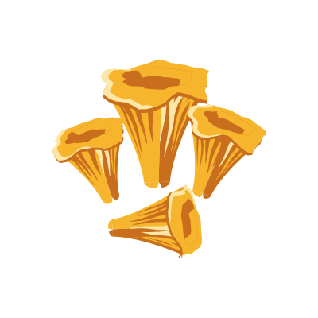

Your island.
Your pace.
A calm game about one island that is truly yours. Grow sixty-four crops, meet more than fifty creatures, and take all the time you like.

Islands.
Each island is generated and stored on the WAX blockchain, and owned by your wallet. It is yours to keep.

Peninsulas, bays, beaches, forests, lakes and terraced snowy mountains. Never arranged the same way twice.
- Generated on chainThe island is created and stored on the WAX blockchain.
- Owned by your walletIt belongs to you, not to a server.
- No two alikeEvery coastline and every mountain is its own.
Creatures.
More than fifty, from familiar woodland animals to gentle legends. Each one is drawn twice.
 Side view
Side view
Fox.
From the side, the way you see it here. And from above, the way it roams across your island map.


And more than forty others. Owls, deer, a kirin, a phoenix, a sky squid.
Every one drawn from the side and from aboveCrops.
Sixty-four of them, each drawn through eight stages. Plant, wait, and watch the field fill in.


Strawberries, seen from above as they grow on your island. Every crop also has its seeds, its harvested produce, and a wilted stage for the field you forgot.
- Seeds 1

- Produce 7

- Wilted 8

64 crops. Wheat, rice and tomatoes. And some that only grow here: moonbloom, glowcap, ember pepper, and an egg plant that really does grow eggs.
 Wheat 01
Wheat 01 Tomatoes 02
Tomatoes 02 Pumpkin 03
Pumpkin 03 Carrots 04
Carrots 04 Sunflower 05
Sunflower 05 Coffee 06
Coffee 06 Dragon fruit 07
Dragon fruit 07 Watermelon 08
Watermelon 08 Moonbloom 09
Moonbloom 09 Glowcap 10
Glowcap 10 Ember pepper 11
Ember pepper 11 Egg plant 12
Egg plant 12 Blueberries 13
Blueberries 13 Cacao 14
Cacao 14 Pineapple 15
Pineapple 15
Chanterelle 16
Claim your
acre.

Connect a wallet to step onto your island. Nothing to rush, nothing to miss.
Works with WAX Cloud Wallet, Wombat and Anchor.